Maguro ヘルプ
Windows 向けの速いマルチペイン ファイル マネージャー
概要
Maguro は Windows 向けのマルチペイン ファイル マネージャーです。
ペイン 1 つがフォルダー 1 つです。並べたり格子にしたりして、別のソフトなしでコピー・移動・比較できます。
スタート メニューかコマンドラインから起動します。maguro.exe の後にフォルダーを書くか、.maguro セッションを開きます。
F1 はこのヘルプをブラウザーで開きます。Ctrl+/ はアプリ内の短いショートカット一覧です。Ctrl+, は設定です。

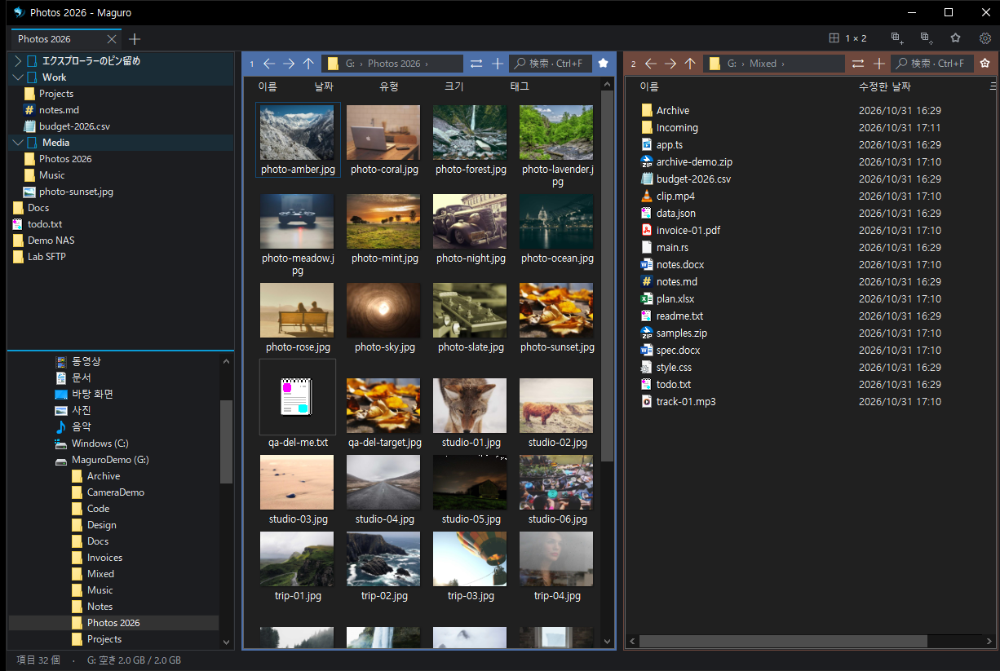
アドレス バーとツール バー
キー一覧は ショートカット.
アドレス バーが現在のフォルダーです。パス名をクリックすると移動します。山括弧で中のフォルダーを一覧します。
現在のフォルダーか余白をクリックするか、ショートカットのアドレス バーでパスを入力します。
ツール バーにはレイアウト、保存、セッションを開く、お気に入りがあります。ドライブ文字はタブ列に出せます。
ステータス バーは選択数と空き容量を出します。
⇄ は選択フォルダー（なければ現在）を別ペインで開き、列と表示を引き継ぎます。または選択ファイルを別ペインへコピー／移動します（最大 10,000）。ペインが一つなら左右に分けます。選択がなければ現在フォルダーを複製します。
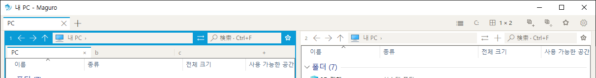
レイアウトとペイン
キー一覧は ショートカット.
ペインはフォルダー 1 つです。
レイアウトをクリックで均等格子。押したままドラッグで列ごとの行数。方向キーと Enter も使えます。
分割線のダブルクリックは均等分割、ドラッグはサイズ変更です。
上限: 列 4、1 列の行 4、ペイン 16。
Ctrl+Shift+M またはヘッダーのダブルクリックでそのペインを最大化し、もう一度で戻します。
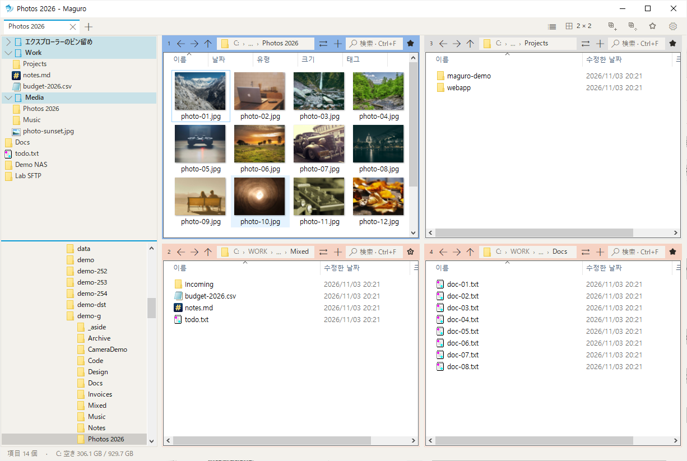


ペインの移動と複製
番号かヘッダーをドラッグして動かします。
端に落とすと対象が分割され、中央は入れ替わります。
Ctrl を押したままドラッグすると現在のペイン タブをコピーします。端は元を残して分割、中央はそのマスにペイン タブを追加します。
赤いプレビューは上限超えです。Ctrl を離すと移動になります。


ウィンドウ タブとセッション
キー一覧は ショートカット.
ウィンドウ タブはレイアウト全体（ペイン・フォルダー・表示・色ラベル）です。
保存はこのタブを書き込みます。保存の緑の点はレイアウト未保存です（通常のファイルコピーとは別）。
セッションを開くは保存したタブを隣に開きます。複数ならそれぞれタブになります。
Ctrl+N は別ウィンドウです。単一ウィンドウ モードならこの窓を前面にし、パスはタブで開きます。単一インスタンスは次の起動をこのプロセスに入れます。
新規／閉じる／次／前タブ、閉じたタブの再開、複製はショートカットを参照。
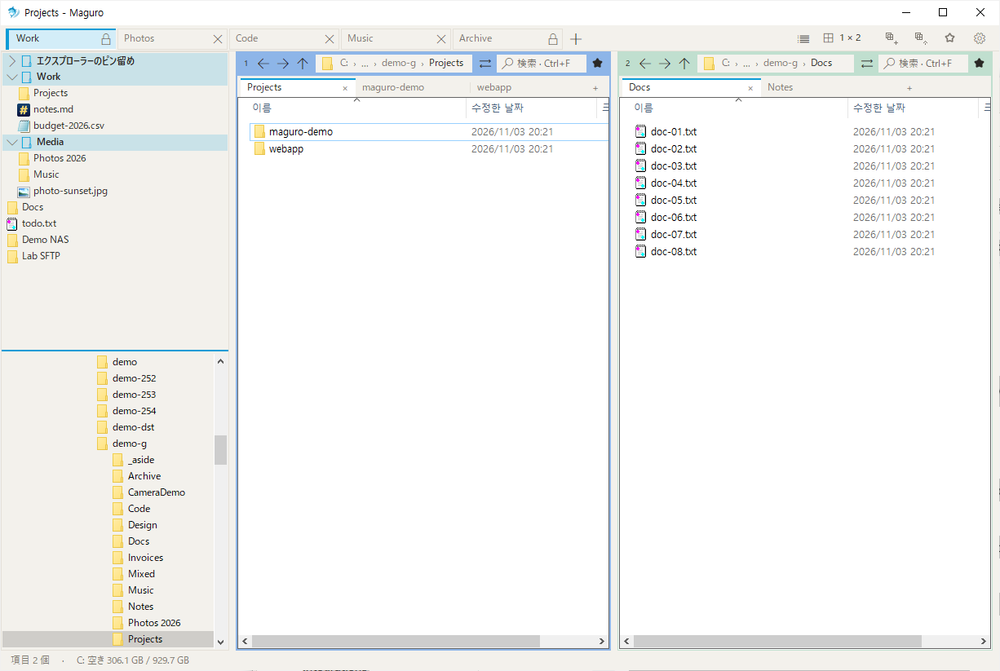
ペイン タブ
キー一覧は ショートカット.
ペイン タブは 1 ペイン内の追加フォルダーで、ウィンドウ タブとは別です。
フォルダーが一つだと帯は隠れます。⇄ の右のボタンで追加します。
中クリックや小さい閉じる印で閉じます。ペイン タブのショートカットはフォーカスがペイン内のときだけです。
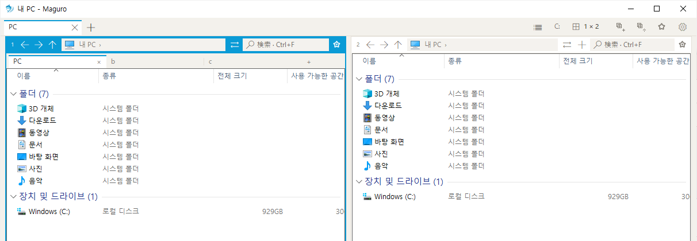
ペインの色
ペイン ヘッダーを右クリックして色ラベルを付けます。
セッションに保存され、ウィンドウ タブの色とは別です。

お気に入りとフォルダー ツリー
キー一覧は ショートカット.
お気に入りとフォルダー ツリーは左パネルを共有します。区切りをドラッグします。上下は設定で決めます。
お気に入りをクリックするとアクティブ ペインで開きます。グループは展開／折りたたみです。検索は親グループを残します。
フォルダーでもファイルでも登録できます。無いフォルダーは空パスを開かず案内します。
ツール バーのお気に入りは大きい一覧（検索・改名・削除・アクティブで開く）です。エクスプローラーのピンも出ることがあります。
ツリーで Enter かダブルクリックでペインに開きます。Ctrl クリック／中クリックはペイン タブです。
左パネルの表示はショートカットを参照。
検索
Ctrl+F でこのフォルダーを検索します。
深い下位検索には Everything を入れ、起動したままにします。設定 → 全般で状態確認・インストール／起動ができます。
Everything 実行中だけ Maguro が問い合わせます。
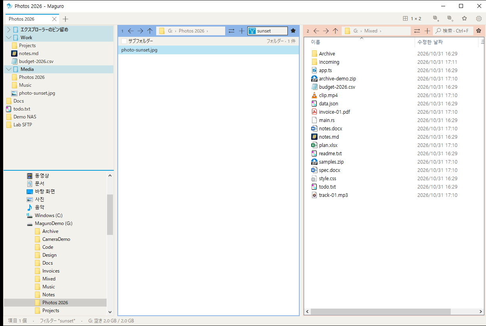
プレビューとクイックルック
キー一覧は ショートカット.
F3 がクイックルックです。Space プレビューがオンなら Space も同じです（入力直後・IME 中の Space は名前の一部）。
クイックルックで Enter は既定アプリで開いて閉じます。Shift+Enter か右クリックは別アプリで開くです。
Alt+P はプレビュー ペインです。オプションがオンならホイールで前後のファイルへ。
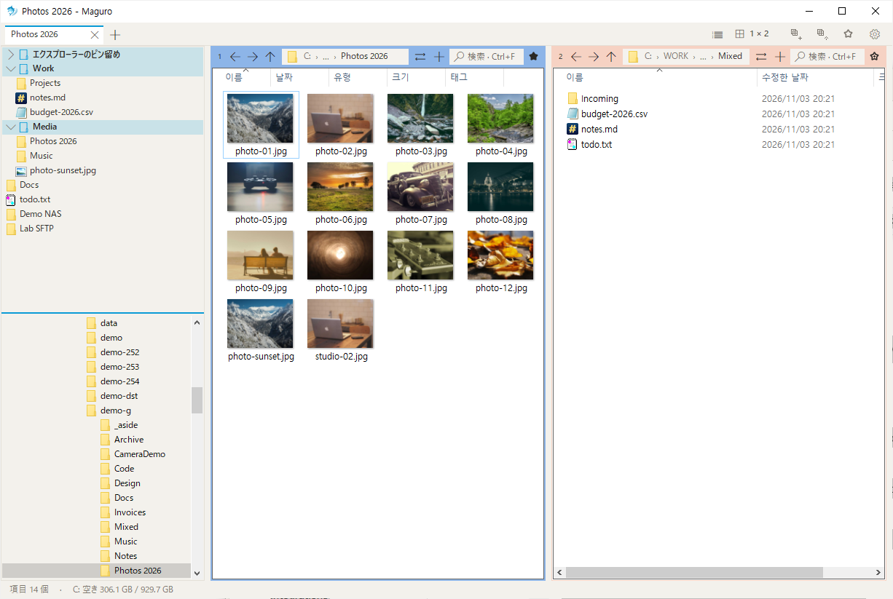
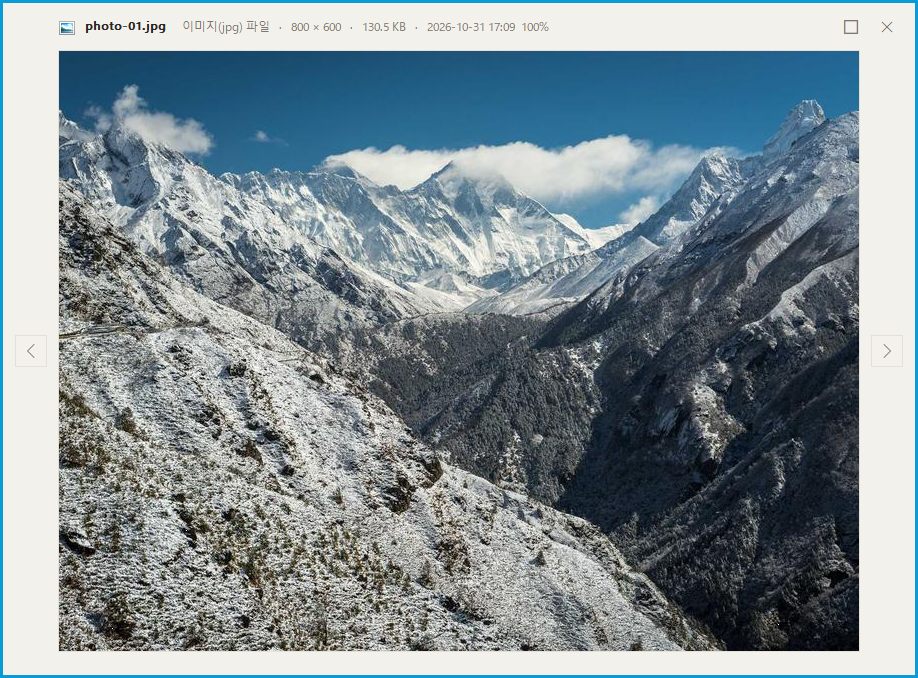
ファイル操作
キー一覧は ショートカット.
コピー・切り取り・貼り付け・名前の変更・削除はエクスプローラーと同じです（ショートカット参照）。
Del は Windows 既定（多くはごみ箱）。Shift+Del は完全削除。設定で確認と既定削除を選べます。
ペイン間ドラッグでコピー／移動。同じドライブは移動、別ドライブはコピー（設定で既定ドラッグ変更可）。フォルダー行に落とすとその中へ。
高速コピー（設定 → ファイル操作）はネットワークの貼り付け／ドラッグに robocopy と Maguro 進行・キャンセルを使います。宛先の余分は消しません。オフは Windows コピー窓。ローカルのみは Windows のままです。
クリップボードに画像があれば Ctrl+V で現在フォルダーへ PNG 保存します。
新しいフォルダー／テキスト ファイルはショートカットにあります。新しいファイル名は設定からです。
Ctrl+Shift+O は同じ選択名を他ペインに集めます。
Ctrl+Alt+C はアクティブと次ペインを WinMerge で比較します。歯車や一覧からファイル同士、または他ペインの同名とも比較できます。パスは設定 → 全般です。
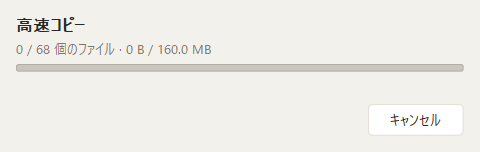
一括名前変更
キー一覧は ショートカット.
Ctrl+Shift+R で選択の一括名前変更です。
接頭・接尾・置換を入れ、適用前にプレビューします。
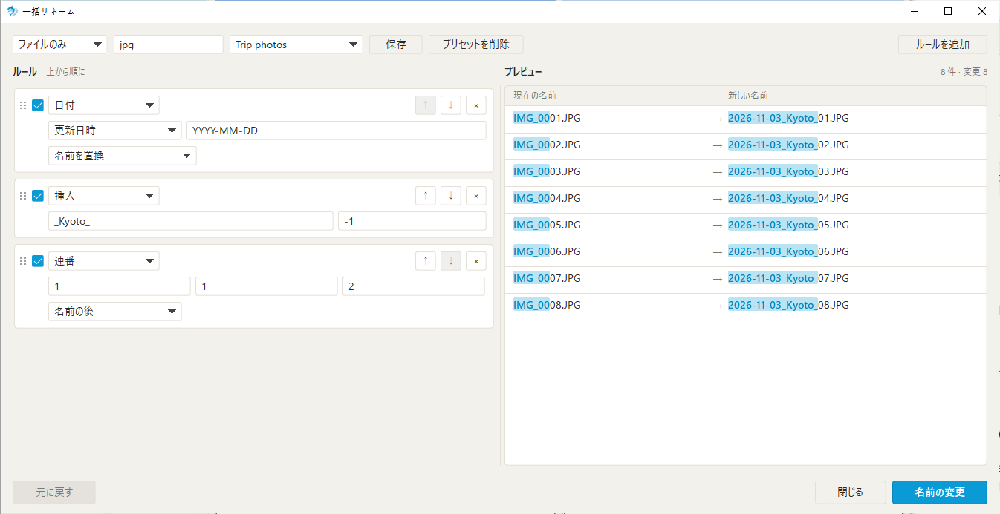
ファイル バスケット
キー一覧は ショートカット.
Ctrl+Shift+B で常に手前の小さいバスケットを開きます。
ドラッグするか Ctrl+Alt+B でアクティブ選択を追加します。元パスを保持します。
アクティブへコピー／移動は Windows 進行窓。外へドラッグはコピー、Shift ドラッグは移動。削除とクリアは一覧だけ変えます。
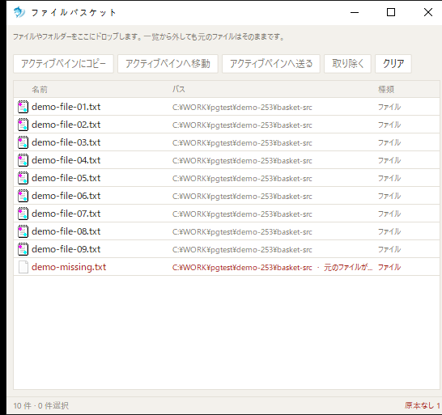
フォルダー監視
キー一覧は ショートカット.
Ctrl+Shift+W でフォルダー監視を開きます。
変更を見て、新規や更新があればすぐ移ります。
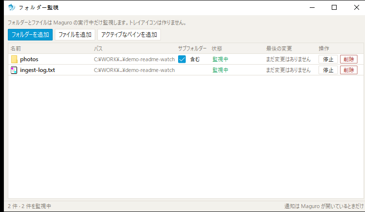
クリップボードのパス
キー一覧は ショートカット.
Win+Shift+V はクリップボードのパスを新しいタブで開きます。
設定 → 全般でこのホットキーを切り替えられます。
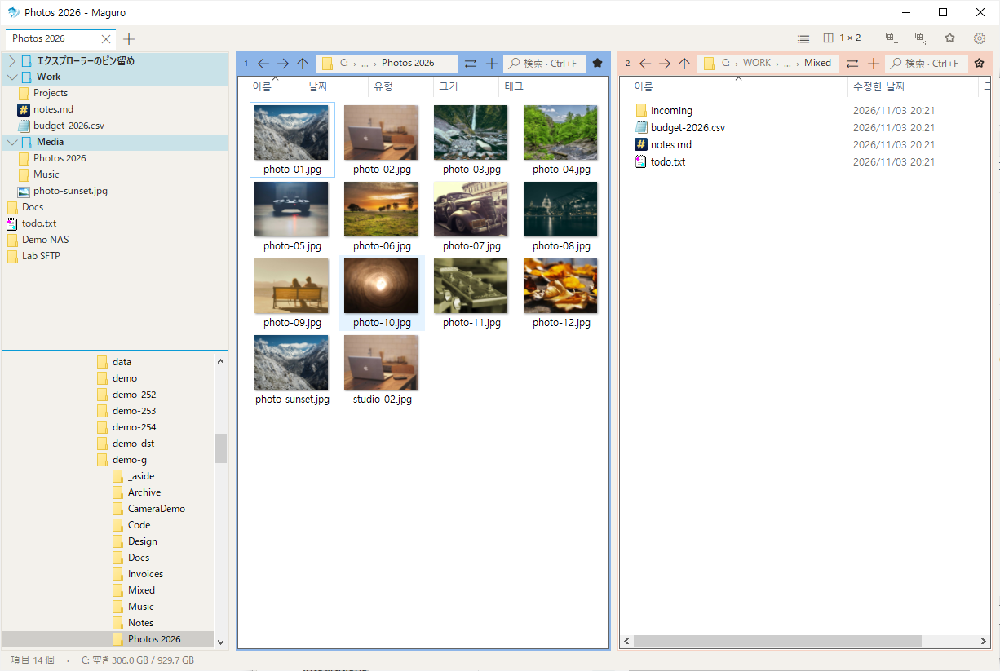
ワークスペース
キー一覧は ショートカット.
ワークスペースはタブ・ペイン・フォルダーを最大 9 スロットに保存します。
Ctrl+Alt+1…9 で読み込み、Ctrl+Alt+Shift+1…9 で保存します。
歯車 → ワークスペースで保存・読み込み・改名・クリア。空スロットは短い案内です。
読み込みは現在のタブを置き換えます。確認はオプションがオンのときだけです。
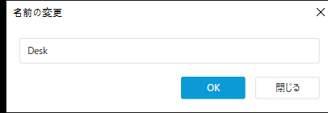
サーバー接続
SMB、WebDAV、SFTP、FTP に接続します。接続先は開いてコピーやプレビューできるフォルダーとして見えます。
ダイアログで種類・アドレス・ポート・ユーザー・パスワードを入れます。パスワードは Windows 資格情報のみで、設定ファイルには書きません。
SMB は Windows 共有。WebDAV は HTTPS が必要なことがあります。FTP は入力したホストとポート。SFTP は rclone と WinFsp が必要で、Maguro がインストールを案内できます。
終わったら切断します。切れた共有はネットワーク フォルダーサイズがオフならサイズを歩きません。開けないときは F5 で再試行します。
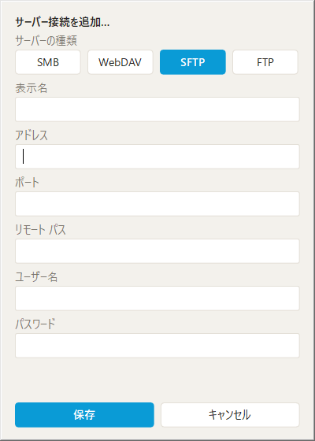
Office ファイル
他アプリが開いている Excel などは読み取り専用になることがあります。
ロックされたブックが閲覧を妨げないよう一覧を整えます。
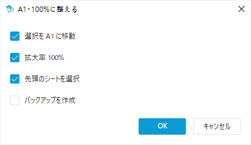
右クリック メニュー
設定 → 右クリック メニューでサードパーティ項目をオフにできます。
クラシックと Windows 11 の二形。Windows 11 パッケージ項目は既定オフで、必要なものだけオンにします。
更新でメニューを再読込します。開く・コピー・プロパティなど Windows 標準は残ります。

テーマと外観
設定 → 外観でテーマ、アクセント、ツール バー、ドライブ ボタン、ステータス バーを決めます。
ライトとダークはアクセントを別々に覚えます。Windows に従うはシステムと連動します。
テーマ変更後、フォルダー一覧の色は次回起動で付き、他はすぐ変わります。
このヘルプのサイドバーにもライト／ダーク／自動があります。
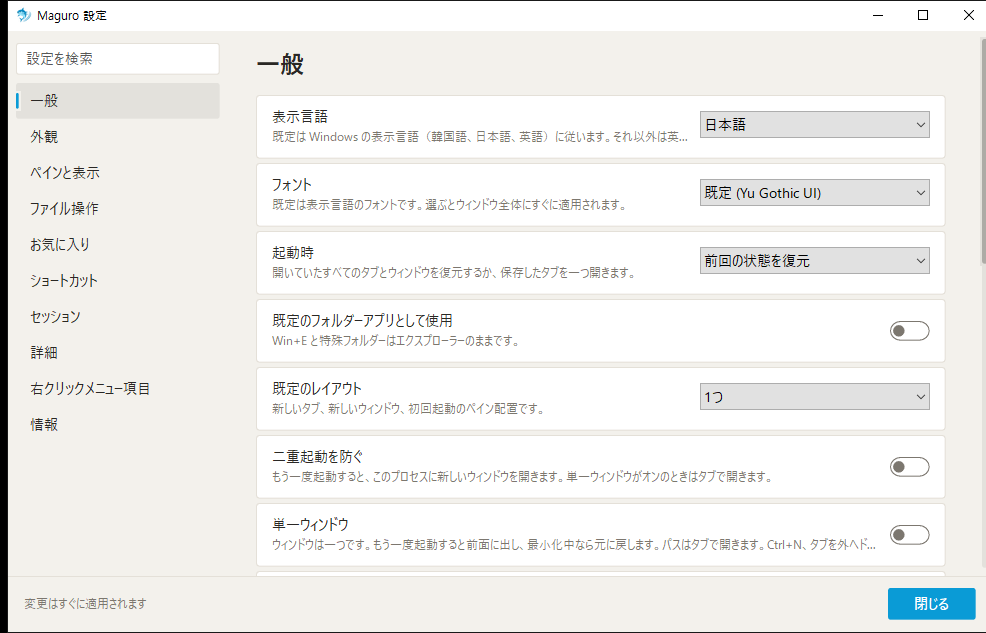
設定
Ctrl+, で設定を開きます。検索はタイトルか説明が一致するカードへジャンプします。
全般 — 表示言語、フォント、起動時、既定フォルダーアプリ、既定レイアウト、単一インスタンス、単一ウィンドウ、開く／保存ダイアログのフォルダー、クリップボードパスのホットキー、余白ダブルクリックで親、Everything、WinMerge。
外観 — テーマ、アクセント、ツール バー、ドライブ ボタン、ステータス バー。
ペインと表示 — 新しいペインの既定表示、フォルダーごとの表示記憶、全フォルダー既定、新しいペインの開始フォルダー、隠しファイル、拡張子、フォルダーサイズ（ネットワーク含む）、左パネルと順序、アクティブ枠、プレビュー ペイン、Space プレビュー、ホイール前後。
ファイル操作 — Windows コピー窓、ネットワーク高速コピー、削除確認、既定削除、新しいファイル名、既定ドラッグ。
お気に入り — 左パネル表示とお気に入り／ツリーの上下。
ショートカット — 行をダブルクリックして新しいキー。Esc で取消、リセットで既定。衝突は通知します。
セッション — セッションフォルダー、終了時保存、緑の点。
詳細 — 起動時更新確認、設定ファイル位置、すべてリセット。maguro.exe 横の portable.txt は設定を AppData ではなく exe 横に置きます。リセットは設定のみ戻し、レイアウト・フォルダー・お気に入りは残します。
右クリック メニュー — サードパーティとメニュー形。
バージョン情報 — バージョンとリンク。
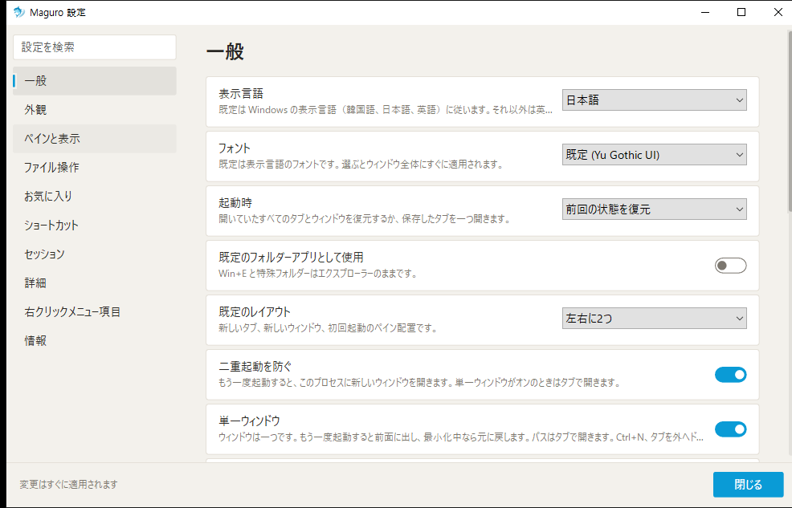
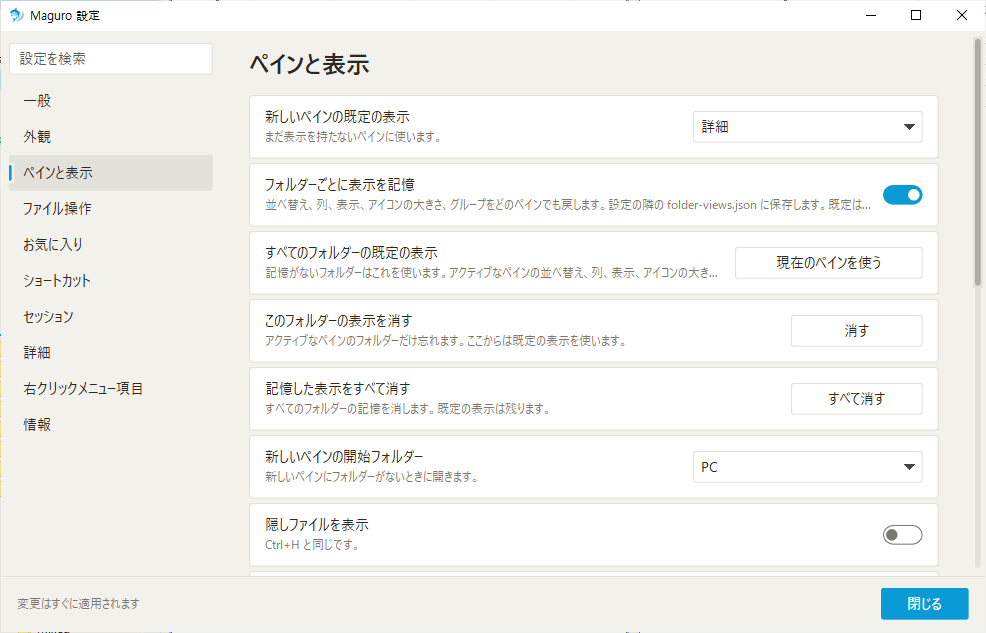
その他のウィンドウ操作
キー一覧は ショートカット.
Win+Shift+E は Maguro を前面にします。
Ctrl+Alt+G はオプションがオンのとき、ファイルダイアログからフォルダーへジャンプします。
F6 / Shift+F6 はフォーカス移動。Ctrl+H は隠しファイル切替。
パターン選択・解除・反転はショートカット（Num+、Num−、Num*）にあります。
フルパスコピーとフォルダーで表示もショートカットにあります。
最近のファイルは Ctrl+Alt+R、最近のフォルダーは Alt+↓ です。

ショートカット
Maguro のすべてのキーが下にあります。同じ一覧は Ctrl+/ でアプリ内にも開きます。
設定 → ショートカットで行をダブルクリックし、新しいキーを押します。Esc で取消、リセットで既定です。
アプリ内一覧は再起動なしで設定に従います。
| キー | 操作 |
|---|---|
| タブ | |
| Ctrl+T | 新しいタブ |
| Ctrl+W | タブを閉じる |
| Ctrl+Tab | 次のタブ |
| Ctrl+Shift+Tab | 前のタブ |
| Ctrl+Shift+T | 閉じたタブを開き直す |
| Ctrl+Alt+K | タブを複製 |
| ペイン | |
| Ctrl+PageDown | 次のペイン |
| Ctrl+PageUp | 前のペイン |
| Ctrl+1…9 | ペイン 1〜9 へ移動 |
| ペイン タブ | |
| Ctrl+Alt+T | 新しいペイン タブ |
| Ctrl+Alt+W | ペイン タブを閉じる |
| Ctrl+Alt+PageDown | 次のペイン タブ |
| Ctrl+Alt+PageUp | 前のペイン タブ |
| 移動 | |
| Alt+Shift+← | 左のペイン |
| Alt+Shift+→ | 右のペイン |
| Alt+Shift+↑ | 上のペイン |
| Alt+Shift+↓ | 下のペイン |
| Ctrl+Alt+Shift+← | 左のペインと入れ替え |
| Ctrl+Alt+Shift+→ | 右のペインと入れ替え |
| Ctrl+Alt+Shift+↑ | 上のペインと入れ替え |
| Ctrl+Alt+Shift+↓ | 下のペインと入れ替え |
| Alt+← | 戻る |
| Alt+→ | 進む |
| Alt+↑ | 上のフォルダー |
| Alt+↓ | 最近のフォルダー |
| Ctrl+L / Alt+D / F4 | アドレス バー |
| 表示 | |
| Ctrl+F | このフォルダーを検索 |
| F3 | クイックルック |
| Alt+P | プレビュー ウィンドウ |
| F6 | 次のフォーカス |
| Shift+F6 | 前のフォーカス |
| Ctrl+H | 隠しファイルを表示 |
| Ctrl+Shift+E | 左のパネルを表示 |
| Ctrl+Shift+O | エクスプローラーのフォルダーを開く |
| Ctrl+Alt+R | 最近使ったファイル |
| Ctrl+Shift+M | ペインを最大化 / 元に戻す |
| ファイル | |
| Ctrl+Shift+C | フルパスをコピー |
| Ctrl+Shift+R | 一括リネーム |
| Num+ / Ctrl+Shift+A | パターンで選択 |
| Num− | パターンで選択解除 |
| Num* | 選択を反転 |
| Ctrl+Alt+N | 新しいテキスト ファイル |
| Ctrl+Shift+N | 新しいフォルダー |
| F7 | このペインに新しいフォルダー |
| Ctrl+Alt+C | WinMerge でフォルダーを比較 |
| Ctrl+Shift+B | ファイルバスケット |
| Ctrl+Alt+B | 選択をバスケットに追加 |
| Ctrl+Enter | フォルダーに表示 |
| セッション | |
| Ctrl+S | このタブを保存 |
| ワークスペース | |
| Ctrl+Alt+1…9 | ワークスペースを開く |
| Ctrl+Alt+Shift+1…9 | ワークスペースを保存 |
| お気に入り | |
| Ctrl+B | お気に入り |
| ヘルプ | |
| Ctrl+, | 設定 |
| F1 | ショートカットのヘルプ |
| Ctrl+/ | ショートカット一覧 |
| ウィンドウ | |
| Win+Shift+E | Maguro を前面に |
| Ctrl+Alt+G | ファイル ダイアログのフォルダーへ移動 |
| Win+Shift+V | クリップボードのパスを開く |
| Ctrl+N | 新しいウィンドウ |
| Ctrl+Shift+W | フォルダー監視 |
マウス: レイアウトのクリック／ドラッグ、アドレスの山括弧、分割線ダブルクリック、ヘッダー右クリックで色、ペイン タブ中クリックで閉じる。
トラブルシューティング
フォルダーが開かない — ペインをクリックして F5。F5 はどこからでもアクティブを再読込し、失敗したネットワークを再試行します。
下位検索が空 — Everything を入れて起動し、設定 → 全般を確認します。
ネットワークコピーが遅い／Maguro 進行がない — ネットワーク高速コピーをオン。オフは Windows コピー窓。ローカルのみには高速コピーは使いません。
WinMerge が起動しない — 設定 → 全般でパスを設定。フォルダー比較は実フォルダーが必要です。
SFTP 失敗 — 案内どおり rclone と WinFsp を入れ、ホスト・ポート・ユーザー・パスワードを確認。WebDAV は HTTPS が必要なことがあります。SMB は Windows 共有パス、FTP は接続のホストとポートです。
窓の色だけ変わり一覧はそのまま — Maguro を再起動。一覧色は起動時に付きます。
前回クラッシュ — 次回起動でレポート位置（設定横の crashes）を知らせます。
二回目起動がすぐ終わる — 単一インスタンス／単一ウィンドウがオンで最初の窓が残ります。インストール可能な更新は maguro.exe を差し替えて再起動します。zip のみのリリースは展開しないので、案内どおり exe を差し替えます。
終了時保存のため、窓の閉じるボタンで終了します。